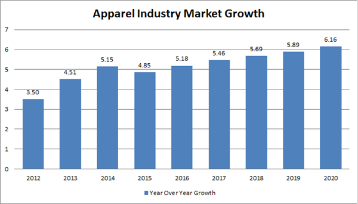

Before we go any further – what exactly determines a fast fashion retailer?
Essentially, it is when the production process is accelerated in order to get new catwalk trends into stores or online as quickly as possible. It also reflects the growing consumer desire for speed and value within retail.
It means that, instead of waiting for new seasonal collections (i.e. spring/summer), consumers can get their hands on a continuous cycle of trend-led clothing, all year round.
Fast-fashion is a critical growth category, outpacing other sectors in the approximately $220 billion US fashion industry.
The aspirational nature of Instagram makes us all the more vulnerable to clever marketing ploys while scrolling through our feeds. In this way, the supposedly democratic platform can obscure the real faces behind our clothing and trick us into wanting what we don’t need.
According to a recent report by Deloitte, 47% of Millennials say that social media influences their purchase decisions.
Brands such as H&M and Zara were said to be among the very first fast fashion retailers. When the latter opened its first US store in 1990 (having first launched in Spain in the 1970s) it announced that it would only take 15 days for a garment to go from concept to completion.
So, what’s fuelling fast fashion brands?
Hitwise data suggests that ASOS, New Look and Very are the most popular brands in the category, accounting for 47% of the UK’s fast fashion market share. For brands like ASOS, the ability to capture millennial consumers is key, with this demographic now reportedly having an estimated spending power of $2.45trn. One way it does this is by delivering on the demand for new fashion, as younger consumers typically spend around seasonal events (such as festivals) as well as after payday. ASOS stocks over 60,000 items at any given time, allowing the ecommerce retailer to constantly update its inventory with ‘new in’ products.
“We live in a culture where people will see something on Instagram or on a celebrity and they want that immediately,”
“I see how ferociously the pace of trends move now and that has definitely been driven by the internet.”
Hitwise data also shows that PrettyLittleThing.com is the fastest growing brand in the fast fashion category, with the site seeing a whopping 663% increase in online visits year-on-year since 2014.
For PrettyLittleThing, working with celebrities and influencers has allowed the brand to drive awareness of its products. A popular search term relating to the site is ‘celebrities wearing Pretty Little Thing’ – mainly thanks to endorsements from the likes of Kylie Jenner and Sofia Ritchie.
However, Pretty Little Thing does not only use celebrities to merely promote its clothing. Well-known names, like former TOWIE star Lucy Meck, have also created their own clothing lines with the brand.
Alongside influencers, fast fashion brands have mastered the use of social media to drive sales.
Today, consumers are constantly craving fashion and lifestyle-related digital content, not just to inspire their choices, but also for the purpose of entertainment. So, in order to deliver this, many retailers have started to act more like media brands – fusing the worlds of shopping, entertainment, and social media.
Unsurprisingly, Instagram reigns supreme as the most effective platform for fashion brands, with many posting videos, Instagram Stories, and including links to shoppable content to allow users to smoothly transition from the act of browsing to buying.
Social media encourages the mentality that once an outfit or item is shared with the public, it can never be worn again and photographed. The problem with this psychological shift is that most people can’t afford to buy a high-end item and only wear it once.
Because of this change, people are more inclined to purchase low-cost, fashion-forward clothing to stay on trend as they share their latest looks with their social followers more often.
Fast fashion retailers are seeing the benefits of these trends’ shorter life cycles because it’s resulting in people constantly looking for a product to satiate their moment of inspiration. Today, people don’t walk into a retail store to find their next look—they turn to their social media feeds to see what’s happening around them with friends or people they admire. These behaviors support the concept of social proofing and empower the sprinklers of social media to become influencers in their own right and the vacuums to find a way to duplicate the look, before it’s gone (and affordably).
According to consumer studies, 81 percent of people are influenced by friends’ posts and 85 percent of people are influenced by celebrity endorsements when making a buying decision. Fast fashion retailer Boohoo reported that its profits doubled after paying celebrities to promote its products on Instagram to 16- to 24-year-old fans.
The fast fashion industry has come under fire in recent years for its impact on the environment, as well as suggestions that the demand for cheap clothing is driving poor working and labour conditions.
Interestingly, research shows that 19% of the top fast fashion related searches are linked to the environment, ethics and sustainability. In order to counteract this, many brands are now displaying increased levels of transparency, with some also introducing initiatives relating to ethical and environmental issues.
H&M, for example, launched a conscious beauty collection in 2016 which included ‘planet-friendly’ products. Similarly, it has set itself the goal of using 100% sustainably sourced cotton by 2020.
Meanwhile, Zara has pledged to boycott Uzbek cotton, which is an industry linked to forced labour. The brand has also joined the Better Cotton Initiative to promote sustainability and best practices for workers in the cotton industry.
Of course, there is still a long way to go before fast fashion retailers prove themselves, however these examples are helping to satisfy increasingly conscientious consumers – as well as enhance their brand reputation.